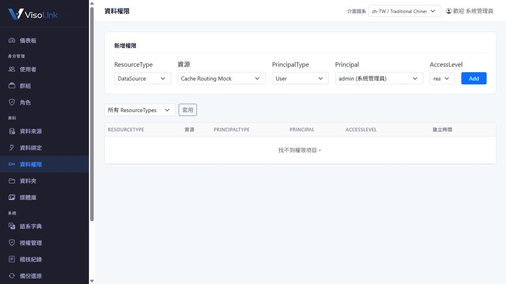

Data Permissions 資料權限
集中管理 DataSource、Display 與 Folder 對 User 或 Role 的 read／write 規則。
瀏覽資料權限清單

| 概念 | 正式選項 |
|---|---|
| ResourceType | DataSource、Display、Folder |
| PrincipalType | User、Role |
| AccessLevel | read、write |
新增資料權限規則
- ResourceType
- DataSource、Display 或 Folder。
- PrincipalType
- 直接指定 User，或透過 Role 集中管理。
- AccessLevel
- read 用於讀取，write 用於可修改的資料操作。
- 選擇 ResourceType。
- 選擇要授權的資源。
- 選擇 User 或 Role，再選擇 Principal。
- 選擇 read 或 write。
- 點選 Add，確認規則出現在清單。
新增規則出現在清單，資源、Principal 與 AccessLevel 均正確。
資料讀寫權限與 Display Library 的圖面管理層級用途不同。
篩選資料權限規則
- 在清單上方選擇全部或特定 ResourceType。
- 點選「套用」。
- 確認清單只顯示目標資源類型。
更新資料權限規則
- 從清單找到規則。
- 調整 AccessLevel。
- 點選更新。
- 以對應帳號驗證前台清單及實際操作。
刪除資料權限規則
- 確認規則不再需要。
- 點選刪除並確認。
- 重新整理清單。
- 以受影響帳號驗證資源已不再可用，或由其他有效規則決定。